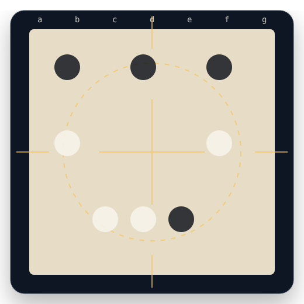
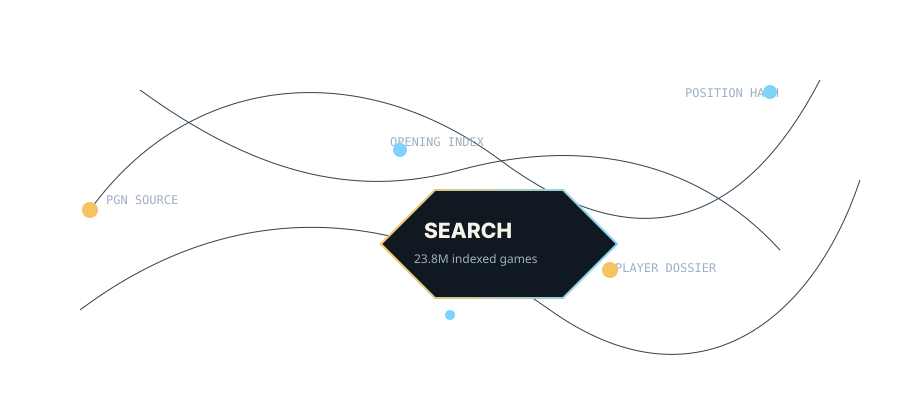

Carlsen 2830 — Firouzja 2760
PGN
Sicilian Defense · 1.e4 c5 2.Nf3 d6 3.d4...
Look up a player, opening, PGN, or position and get a precise dossier from recorded games — built for preparation, commentary, coaching, and curiosity.
Paste FEN/PGN or use the board placeholder where your interactive board component can be dropped in.

Every search is organized into player identity, opening tendencies, comparable games, result distribution, PGN references, and source freshness.
Try a sample search →Sicilian Defense · 1.e4 c5 2.Nf3 d6 3.d4...
Open Game · 1.e4 e5 2.Nf3 Nc6 3.Bb5...
Caro-Kann · 1.e4 c6 2.d4 d5 3.Nc3...
Search is the center, but discovery keeps the product alive.
See who is being investigated this week and what changed in their recent games.
Browse openings by ECO, score, popularity, and novelty frequency.
Paste a position and find matching games, transpositions, and player tendencies.
Chess Intelligence combines PGN crawling, duplicate detection, player identity resolution, ECO classification, and position hashing into a single clear interface.

Search a name, FIDE ID, opening code, event, PGN, or board state.
The platform matches players, positions, openings, dates, and source references.
Get game rows, tendencies, confidence signals, and exportable PGN paths.
Start with a player, opening, PGN, or position. The first search should take less than five seconds.
Run a search